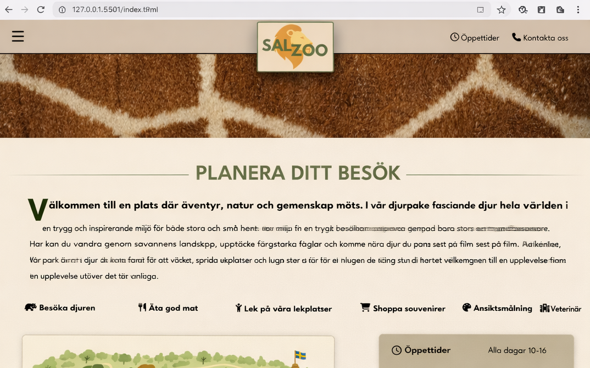
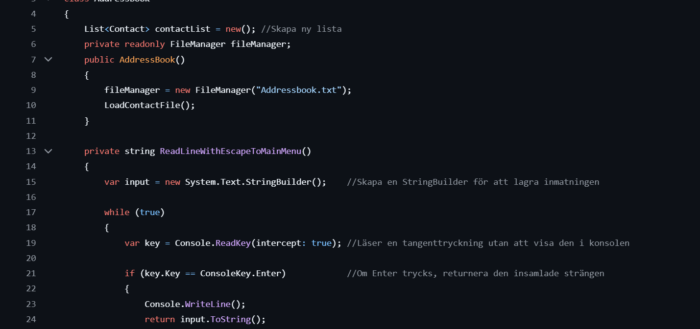

Sara Lindh
Blivande .NET-molnutvecklare baserad i Göteborg med bakgrund inom ledarskap och affärsutveckling. Jag drivs av att lösa problem och angripa utmaningar från flera perspektiv: tekniskt, mänskligt och affärsmässigt
Scrolla ner för att se mitt arbete
Om mig
Jag kommer från en bakgrund inom retail där jag arbetat nära människor, processer och affärsutveckling. Det har gett mig ett öga för helheten – och ett genuint intresse för hur system och beslut hänger ihop.
Med tiden växte en nyfikenhet kring tekniken bakom systemen jag använde. Jag ville inte bara förstå dem – jag ville bygga dem. Det blev starten på min resa in i utveckling.
Idag siktar jag på att kombinera min affärserfarenhet med teknisk kompetens för att bygga lösningar som faktiskt gör skillnad.

Arbetslivserfarenheter
Avdelningschef Hår & Skönhet, Nordiska Kompaniet (Vacker AB)
Helhetsansvar för avdelningens resultat, drift och utveckling med personalansvar för 18 medarbetare. Säkerställde hög kvalitet i försäljning och service genom ett coachande och närvarande ledarskap. Arbetade strategiskt och operativt med inköp, resultatuppföljning och analys samt ansvarade för rekrytering, schemaläggning och avtalshantering. Planerade och genomförde marknadsaktiviteter samt projektledde flera event.
Franchisetagare / Butiksägare, Pressbyrån Norra hamngatan
Etablerade och drev verksamheten med fullt operativt ansvar för bolagets ekonomi, budget, redovisning och uppföljning samt inköp, lager, inventering och personal. Arbetade strategiskt med att utveckla verksamheten genom ökad tillväxt, stärkt lönsamhet och effektivare arbetssätt. Var vid tillträdet koncernens yngsta franchisetagare och utsågs till årets butik i Göteborgsregionen 2022.
Butikschef Pressbyrån Göteborg C
Ansvarade för den dagliga driften inklusive arbetsledning, delegering och utbildning av personal. Hanterade löpande operativa inköp inom flera produktkategorier samt följde upp och rapporterade försäljningsresultat till butiksägaren.
Övriga arbetslivserfarenheter
Tidigare erfarenhet från flera roller inom service, bland annat inom café, restaurang, kiosk och dagligvaruhandel.
Utbildning
Övrigt & Meriter
Projekt

ZooSal
Webbuteckling
ZooSAL är en fiktiv djurparkswebbplats byggd i HTML och CSS som ett grupprojekt. Sidan presenterar parken med sektioner för djur, restauranger, öppettider och karta.
Vi jobbade med Git och GitHub, feature-branches och pull requests — en praktisk introduktion till ett verkligt utvecklingsflöde.
Github repo →
Bloggportal
Web API
REST API byggt i C# med ASP.NET Core för en bloggplattform. Hanterar blogginlägg, kategorier, kommentarer och användare med JWT-autentisering och Entity Framework Core mot SQL Server.
Följer skiktad arkitektur med Controllers, Services, Repositories och DTOs — affärslogik och dataaccess hålls separerade.
Github repo →
Shotgun
Konsollapplikation
Mitt första C#-projekt — ett turbaserat konsollspel mot datorn. Spelaren väljer varje runda mellan att ladda, skjuta, hagelgevär eller blockera baserat på ammunitionstillstånd.
Strukturerat med separata klasser för spellogik, spelarhantering och action-typer.
Github repo →
Adressbok
Konsollapplikation
Konsolbaserad C#-applikation med CRUD-funktionalitet. Kontakter sparas automatiskt till fil via en dedikerad FileManager-klass.
Uppdelad i separata klasser för modell, logik och filhantering med ett menybaserat gränssnitt. Grupparbete.
Github repo →Kunskap
väg...
Omdömen
“Sara är en väldigt driftig, snabblärd och resultatinriktad person med en stor social kompetens och förmåga att engagera”
“Att jobba med Sara är en fröjd, hon är snabb, lösningsorienterad och hennes breda erfarenhet gör det lätt att sammarbeta i olika projekt. Rekomenderar varmt!”